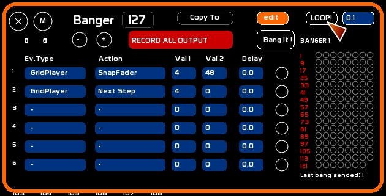
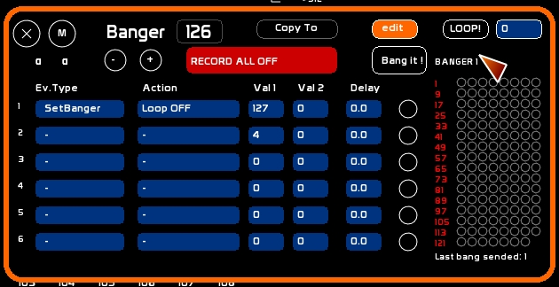

C'est en donnant une formation à GroupLaps, que je me suis rendu comte que l'on pouvait enregistrer en temps réel toutes les manipulations des faders ou issues des faders, sans avoir besoin d'écrire un module complémentaire.
On peut donc enregistrer ses tracés à main levée avec Draw, ou bien les manips avec les masters, la roue de trichromie,le tracking vidéo, etc etc… ce de manière assez rapide et efficace.
Pour y arriver, il faut utiliser les Bangers et les GridPlayers.
Attention, pour les débutants ce How-To pourra paraître un peu complexe, car il fait appel à des fonctionnalités très particulières dans whitecat.
Grâce à Banger, on peut récupérer l'état d'un fader et le copier dans un GridPlayer par la fonction SnapFader.
SnapFader nous prendra le niveau issu d'un Fader, quelque soit son contenu ( circuits, mémoire, roue de tricho, gridplayer, ou même un Fader Group qui lui pourra nous servir à récupérer plusieurs Faders si besoin).
Grâce à Banger, on peut aussi avancer d'un pas de GridPlayer.
Il s'agit donc de déclencher Banger de manière répétée en continu, sur un tempo assez rapide.
Pour ce, on passera par une macro de circuit qui déclenchera notre banger à une certaine vitesse. On utilisera le Gridplayer à la même vitesse pour lire notre manipulation ainsi échantillonnée.
Nous allons utiliser la fonction LOOP du Banger, qui a été créée pour cette fonction.
Nous avons besoin de deux bangers:
- un bouton de déclenchement de l'échantillonnage
- un bouton d'arrêt de l'échantillonage
Il s'agit donc de deux bangers, que nous pourrons déclencher en midi ou à la souris.
A chaque Bang, il déclenche la récupération de l'état lumineux issu du Fader 48 et le copie dans le GridPlayer 4.
Puis il avance le GridPlayer d'un pas.
On enregistre un temps de 0.1 secondes dans le temps de Loop.
Mis ON, ce banger tourne en continu et séquence ce qui sort du Fader 48 tous les 10èmes de secondes.

Il enlève le mode Loop du Banger d'enregistrement 126

Dans votre GridPlayer est capturé tout ce qui sort du Fader 48.
Donc dessiner à main levée un état lumineux avec Draw chargé dans 48, bouger une roue de couleur et jouer un mouvement de désaturation dans 48, ou bien jouer avec le tracking vidéo, c'est possible.
Il faut utiliser la fonction FaderGroup, voir la fenêtre des minifaders.
Dans le FaderGroup vous pouvez affecter plusieurs faders. Une séquence faite avec 8 faders ( ou plus ) peut être enregistrée dans le GridPlayer.
Notre FaderGroup est le Fader 48.
Pour une restitution du séquençage à l'identique, il faudra veiller à avoir les mêmes temps entre le LOOP du banger d'enregistrement et la la vitesse du GridPlayer.
Vous pourrez corriger et affiner l'enregistrement grâce aux GridPlayers.
Pour l'instant, pour une action à l'identique, il faudra appeler:
Grâce au GridPlayer vous pouvez désormais éditer les pas, les rejouer plus ou moins rapidement, affiner la capture.